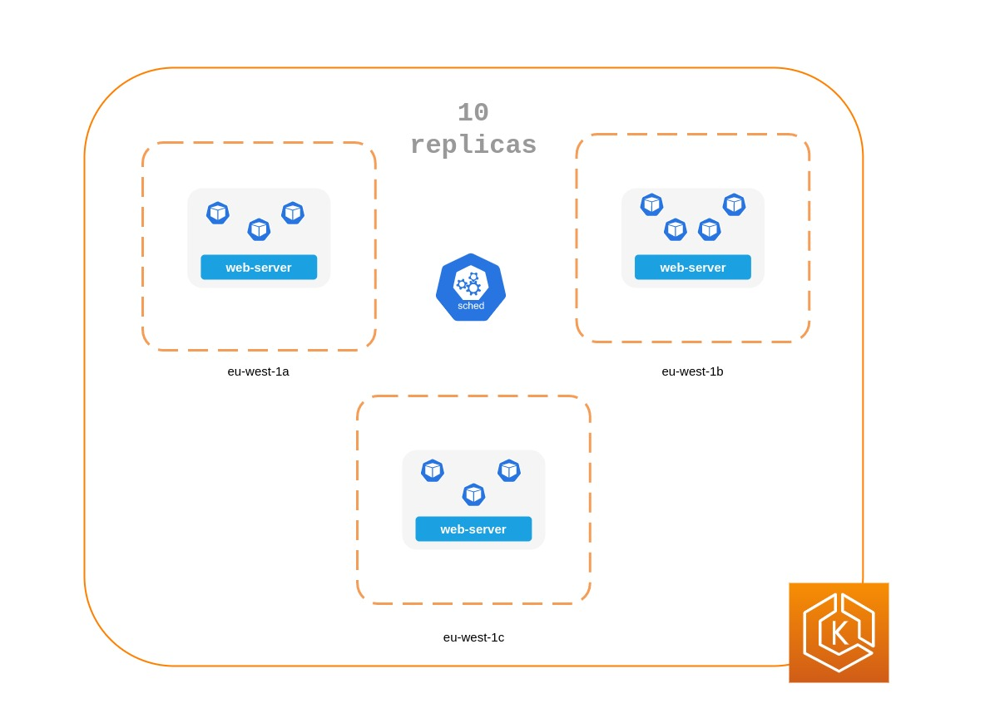

고가용성 애플리케이션 실행¶
고객은 애플리케이션을 변경할 때나 트래픽이 급증할 때 조차 애플리케이션이 항상 사용 가능하기를 기대합니다. 확장 가능하고 복원력이 뛰어난 아키텍처를 통해 애플리케이션과 서비스를 중단 없이 실행하여 사용자 만족도를 유지할 수 있습니다. 확장 가능한 인프라는 비즈니스 요구 사항에 따라 확장 및 축소됩니다. 단일 장애 지점을 제거하는 것은 애플리케이션의 가용성을 개선하고 복원력을 높이기 위한 중요한 단계입니다.
쿠버네티스를 사용하면 가용성과 복원력이 뛰어난 방식으로 애플리케이션을 운영하고 실행할 수 있습니다. 선언적 관리를 통해 애플리케이션을 설정한 후에는 쿠버네티스가 지속적으로 현재 상태를 원하는 상태와 일치하도록 시도할 수 있습니다.
권장 사항¶
싱글톤 파드를 실행하지 마세요¶
전체 애플리케이션이 단일 파드에서 실행되는 경우, 해당 파드가 종료되면 애플리케이션을 사용할 수 없게 됩니다. 개별 파드를 사용하여 애플리케이션을 배포하는 대신 디플로이먼트를 생성하십시오. 디플로이먼트로 생성된 파드가 실패하거나 종료되는 경우, 디플로이먼트 컨트롤러는 새 파드를 시작하여 지정된 개수의 레플리카 파드가 항상 실행되도록 합니다.
여러 개의 레플리카 실행¶
디플로이먼트를 사용하여 앱의 여러 복제본 파드를 실행하면 가용성이 높은 방식으로 앱을 실행할 수 있습니다. 하나의 복제본에 장애가 발생하더라도 쿠버네티스가 손실을 만회하기 위해 다른 파드를 생성하기 전까지는 용량이 줄어들기는 하지만 나머지 복제본은 여전히 작동한다. 또한 Horizontal Pod Autoscaler를 사용하여 워크로드 수요에 따라 복제본을 자동으로 확장할 수 있습니다.
여러 노드에 복제본을 스케줄링합니다.¶
모든 복제본이 동일한 노드에서 실행되고 있고 노드를 사용할 수 없게 되면 여러 복제본을 실행하는 것은 그다지 유용하지 않습니다. 파드 anti-affinity 또는 파드 topology spread contraints을 사용해 디플로이먼트의 복제본을 여러 워커 노드에 분산시키는 것을 고려해 보십시오.
여러 AZ에서 실행하여 일반적인 애플리케이션의 신뢰성을 더욱 개선할 수 있습니다.
파드 anti-affinity 규칙 사용¶
아래 매니페스트는 쿠버네티스 스케줄러에게 파드를 별도의 노드와 AZ에 배치하도록 prefer라고 지시합니다. 이렇게 되어있다면 별도의 노드나 AZ가 필요하지 않습니다. 그렇게 하면 각 AZ에서 실행 중인 파드가 있으면 쿠버네티스가 어떤 파드도 스케줄링할 수 없기 때문입니다. 애플리케이션에 단 세 개의 복제본이 필요한 경우, topologyKey: topology.kubernetes.io/zone에 대해 requiredDuringSchedulingIgnoredDuringExecution를 사용할 수 있으며, 쿠버네티스 스케줄러는 동일한 AZ에 두 개의 파드를 스케줄링하지 않습니다.
apiVersion: apps/v1
kind: Deployment
metadata:
name: spread-host-az
labels:
app: web-server
spec:
replicas: 4
selector:
matchLabels:
app: web-server
template:
metadata:
labels:
app: web-server
spec:
affinity:
podAntiAffinity:
preferredDuringSchedulingIgnoredDuringExecution:
- podAffinityTerm:
labelSelector:
matchExpressions:
- key: app
operator: In
values:
- web-server
topologyKey: topology.kubernetes.io/zone
weight: 100
- podAffinityTerm:
labelSelector:
matchExpressions:
- key: app
operator: In
values:
- web-server
topologyKey: kubernetes.io/hostname
weight: 99
containers:
- name: web-app
image: nginx:1.16-alpine
파드 topology spread constraints 사용¶
파드 anti-affinity 규칙과 마찬가지로, 파드 topology spread constraints을 사용하면 호스트 또는 AZ와 같은 다양한 장애 (또는 토폴로지) 도메인에서 애플리케이션을 사용할 수 있습니다. 이 접근 방식은 서로 다른 토폴로지 도메인 각각에 여러 복제본을 보유하여 내결함성과 가용성을 보장하려는 경우에 매우 효과적입니다. 반면, 파드 anti-affinity 규칙은 anti-affinity가 있는 파드 서로에 대해 거부 효과가 있기 때문에 토폴로지 도메인에 단일 복제본이 있도록 쉽게 만들 수 있습니다. 이러한 경우 전용 노드의 단일 복제본은 내결함성 측면에서 이상적이지도 않고 리소스를 적절하게 사용하지도 않습니다. topology spread constraints을 사용하면 스케줄러가 토폴로지 도메인 전체에 적용하려고 시도하는 분배 또는 배포를 보다 효과적으로 제어할 수 있습니다. 이 접근 방식에서 사용할 수 있는 몇 가지 중요한 속성은 다음과 같습니다.
1. MaxSkew는 토폴로지 도메인 전체에서 균등하지 않게 분산될 수 있는 최대 정도를 제어하거나 결정하는 데 사용됩니다. 예를 들어 애플리케이션에 10개의 복제본이 있고 3개의 AZ에 배포된 경우 균등하게 분산될 수는 없지만 분포의 불균일성에 영향을 미칠 수 있습니다. 이 경우 MaxSkew는 1에서 10 사이일 수 있습니다.값이 1이면 3개의 AZ에 걸쳐 4,3,3, 3,4,3 또는 3,3,4와 같은 분배가 생성될 수 있습니다. 반대로 값이 10이면 3개의 AZ에 걸쳐 10,0,0, 0,10,0 또는 0,0,10과 같은 분배가 나올 수 있다는 의미입니다.
2. TopologyKey는 노드 레이블 중 하나의 키이며 파드 배포에 사용해야 하는 토폴로지 도메인 유형을 정의합니다. 예를 들어 존(zone)별 분배는 다음과 같은 키-값 쌍을 가집니다.
WhenUnsatisfiable 속성은 원하는 제약 조건을 충족할 수 없는 경우 스케줄러가 어떻게 응답할지 결정하는 데 사용됩니다.
4. LabelSelector는 일치하는 파드를 찾는 데 사용되며, 이를 통해 스케줄러는 지정한 제약 조건에 따라 파드를 배치할 위치를 결정할 때 이를 인지할 수 있습니다.
위의 필드 외에도, 다른 필드에 대해서는 쿠버네티스 설명서에서 더 자세히 알아볼 수 있습니다.

apiVersion: apps/v1
kind: Deployment
metadata:
name: spread-host-az
labels:
app: web-server
spec:
replicas: 10
selector:
matchLabels:
app: web-server
template:
metadata:
labels:
app: web-server
spec:
topologySpreadConstraints:
- maxSkew: 1
topologyKey: "topology.kubernetes.io/zone"
whenUnsatisfiable: ScheduleAnyway
labelSelector:
matchLabels:
app: express-test
containers:
- name: web-app
image: nginx:1.16-alpine
쿠버네티스 메트릭 서버 실행¶
쿠버네티스 메트릭 서버 를 설치하면 애플리케이션 확장에 도움이 됩니다. HPA 및 VPA와 같은 쿠버네티스 오토스케일러 애드온은 애플리케이션의 메트릭을 추적하여 애플리케이션을 확장합니다. 메트릭 서버는 규모 조정 결정을 내리는 데 사용할 수 있는 리소스 메트릭을 수집합니다. 메트릭은 kubelets에서 수집되어 메트릭 API 형식으로 제공됩니다.
메트릭 서버는 데이터를 보관하지 않으며 모니터링 솔루션도 아닙니다. 그 목적은 CPU 및 메모리 사용량 메트릭을 다른 시스템에 공개하는 것입니다. 시간 경과에 따른 애플리케이션 상태를 추적하려면 Prometheus 또는 Amazon CloudWatch와 같은 모니터링 도구가 필요합니다.
EKS 설명서에 따라 EKS 클러스터에 메트릭 서버를 설치하십시오.
Horizontal Pod Autoscaler (HPA)¶
HPA는 수요에 따라 애플리케이션을 자동으로 확장하고 트래픽이 최고조에 달할 때 고객에게 영향을 미치지 않도록 도와줍니다. 쿠버네티스에는 제어 루프로 구현되어 있어 리소스 메트릭을 제공하는 API에서 메트릭을 정기적으로 쿼리합니다.
HPA는 다음 API에서 메트릭을 검색할 수 있습니다.
1. 리소스 메트릭 API라고도 하는 metrics.k8s.io — 파드의 CPU 및 메모리 사용량을 제공합니다.
2. custom.metrics.k8s.io — 프로메테우스와 같은 다른 메트릭 콜렉터의 메트릭을 제공합니다. 이러한 메트릭은 쿠버네티스 클러스터에 internal 입니다.
3. external.metrics.k8s.io — 쿠버네티스 클러스터에 __external__인 메트릭을 제공합니다 (예: SQS 대기열 길이, ELB 지연 시간).
애플리케이션을 확장하기 위한 메트릭을 제공하려면 이 세 가지 API 중 하나를 사용해야 합니다.
사용자 지정 또는 외부 지표를 기반으로 애플리케이션 규모 조정¶
사용자 지정 또는 외부 지표를 사용하여 CPU 또는 메모리 사용률 이외의 지표에 따라 애플리케이션을 확장할 수 있습니다.커스텀 메트릭 API 서버는 HPA가 애플리케이션을 자동 스케일링하는 데 사용할 수 있는 custom-metrics.k8s.io API를 제공합니다.
쿠버네티스 메트릭 API용 프로메테우스 어댑터를 사용하여 프로메테우스에서 메트릭을 수집하고 HPA에서 사용할 수 있습니다. 이 경우 프로메테우스 어댑터는 프로메테우스 메트릭을 메트릭 API 형식으로 노출합니다. 모든 커스텀 메트릭 구현 목록은 쿠버네티스 설명서에서 확인할 수 있습니다.
프로메테우스 어댑터를 배포한 후에는 kubectl을 사용하여 사용자 지정 메트릭을 쿼리할 수 있습니다.
kubectl get —raw /apis/custom.metrics.k8s.io/v1beta1/
외부 메트릭은 이름에서 알 수 있듯이 Horizontal Pod Autoscaler에 쿠버네티스 클러스터 외부의 메트릭을 사용하여 배포를 확장할 수 있는 기능을 제공합니다. 예를 들어 배치 처리 워크로드에서는 SQS 대기열에서 진행 중인 작업 수에 따라 복제본 수를 조정하는 것이 일반적입니다.
Kubernetes 워크로드를 자동 확장하려면 여러 사용자 정의 이벤트를 기반으로 컨테이너 확장을 구동할 수 있는 오픈 소스 프로젝트인 KEDA(Kubernetes Event-driven Autoscaling)를 사용할 수 있습니다. 이 AWS 블로그에서는 Kubernetes 워크로드 자동 확장을 위해 Amazon Managed Service for Prometheus를 사용하는 방법을 설명합니다.
Vertical Pod Autoscaler (VPA)¶
VPA는 파드의 CPU 및 메모리 예약을 자동으로 조정하여 애플리케이션을 “적절한 크기”로 조정할 수 있도록 합니다. 리소스 할당을 늘려 수직으로 확장해야 하는 애플리케이션의 경우 VPA를 사용하여 파드 복제본을 자동으로 확장하거나 규모 조정 권장 사항을 제공할 수 있습니다.
VPA의 현재 구현은 파드에 대한 인플레이스 조정을 수행하지 않고 대신 스케일링이 필요한 파드를 다시 생성하기 때문에 VPA가 애플리케이션을 확장해야 하는 경우 애플리케이션을 일시적으로 사용할 수 없게 될 수 있습니다.
EKS 설명서에는 VPA 설정 방법이 수록되어 있습니다.
Fairwinds Goldilocks 프로젝트는 CPU 및 메모리 요청 및 제한에 대한 VPA 권장 사항을 시각화할 수 있는 대시보드를 제공합니다. VPA 업데이트 모드를 사용하면 VPA 권장 사항에 따라 파드를 자동 확장할 수 있습니다.
애플리케이션 업데이트¶
최신 애플리케이션에는 높은 수준의 안정성과 가용성을 갖춘 빠른 혁신이 필요합니다. 쿠버네티스는 고객에게 영향을 주지 않으면서 애플리케이션을 지속적으로 업데이트할 수 있는 도구를 제공합니다.
가용성 저하 없이 변경 사항을 신속하게 배포할 수 있는 몇 가지 모범 사례를 살펴보겠습니다.
롤백을 수행할 수 있는 메커니즘 마련¶
실행 취소 버튼이 있으면 재해를 피할 수 있습니다. 프로덕션 클러스터를 업데이트하기 전에 별도의 하위 환경(테스트 또는 개발 환경)에서 배포를 테스트하는 것이 가장 좋습니다. CI/CD 파이프라인을 사용하면 배포를 자동화하고 테스트하는 데 도움이 될 수 있습니다. 지속적 배포 파이프라인을 사용하면 업그레이드에 결함이 발생할 경우 이전 버전으로 빠르게 되돌릴 수 있습니다.
디플로이먼트를 사용하여 실행 중인 애플리케이션을 업데이트할 수 있습니다. 이는 일반적으로 컨테이너 이미지를 업데이트하여 수행됩니다. kubectl을 사용하여 다음과 같이 디플로이먼트를 업데이트할 수 있습니다.
--record 인수는 디플로이먼트의 변경 사항을 기록하고 롤백을 수행해야 하는 경우 도움이 됩니다. kubectl rollout history deployment는 클러스터의 디플로이먼트에 대해 기록된 변경 사항을 보여준다. kubectl rollout undo deployment <DEPLOYMENT_NAME>을 사용하여 변경사항을 롤백할 수 있습니다.
기본적으로, 파드를 재생성해야 하는 디플로이먼트를 업데이트하면 디플로이먼트는 롤링 업데이트를 수행합니다. 즉, 쿠버네티스는 디플로이먼트에서 실행 중인 파드의 일부만 업데이트하고 모든 파드는 한 번에 업데이트하지 않습니다. RollingUpdateStrategy 프로퍼티를 통해 쿠버네티스가 롤링 업데이트를 수행하는 방식을 제어할 수 있습니다.
디플로이먼트의 롤링 업데이트를 수행할 때, Max Unavailable 프로퍼티를 사용하여 업데이트 중에 사용할 수 없는 파드의 최대 개수를 지정할 수 있습니다. 디플로이먼트의 Max Surge 프로퍼티를 사용하면 원하는 파드 수보다 더 생성할 수 있는 최대 파드 수를 설정할 수 있습니다.
롤아웃으로 인해 고객이 혼란에 빠지지 않도록 max unavailable을 조정하는 것을 고려해 보십시오. 예를 들어 쿠버네티스는 기본적으로 25%의 max unavailable을 설정합니다. 즉, 100개의 파드가 있는 경우 롤아웃 중에 활성 상태로 작동하는 파드는 75개만 있을 수 있습니다. 애플리케이션에 최소 80개의 파드가 필요한 경우 이 롤아웃으로 인해 중단이 발생할 수 있습니다. 대신, max unavailable을 20% 로 설정하여 롤아웃 내내 작동하는 파드가 80개 이상 있도록 할 수 있습니다.
블루/그린 배포 사용¶
변경은 본질적으로 위험하지만, 취소할 수 없는 변경은 잠재적으로 치명적일 수 있습니다. 롤백을 통해 시간을 효과적으로 되돌릴 수 있는 변경 절차를 사용하면 향상된 기능과 실험이 더 안전해집니다. 블루/그린 배포는 문제가 발생할 경우 변경 사항을 신속하게 철회할 수 있는 방법을 제공합니다. 이 배포 전략에서는 새 버전을 위한 환경을 만듭니다. 이 환경은 업데이트 중인 애플리케이션의 현재 버전과 동일합니다. 새 환경이 프로비전되면 트래픽이 새 환경으로 라우팅됩니다. 새 버전에서 오류가 발생하지 않고 원하는 결과를 얻을 경우 이전 환경은 종료됩니다. 그렇지 않으면 트래픽이 이전 버전으로 복원됩니다.
기존 버전의 디플로이먼트와 동일한 새 디플로이먼트를 생성하여 쿠버네티스에서 블루/그린 디플로이먼트를 수행할 수 있습니다. 새 디플로이먼트의 파드가 오류 없이 실행되고 있는지 확인했으면, 트래픽을 애플리케이션의 파드로 라우팅하는 서비스의 selector 스펙을 변경하여 새 디플로이먼트로 트래픽을 보내기 시작할 수 있습니다.
Flux, Jenkins, Spinnaker와 같은 많은 지속적 통합(CI) 도구를 사용하면 블루/그린 배포를 자동화할 수 있습니다. 쿠버네티스 블로그에는 Jenkins를 사용한 단계별 설명이 포함되어 있습니다: Jenkins를 사용한 쿠버네티스의 제로 다운타임 배포
Canary 디플로이먼트 사용하기¶
Canary 배포는 블루/그린 배포의 변형으로, 변경으로 인한 위험을 크게 제거할 수 있습니다. 이 배포 전략에서는 기존 디플로이먼트와 함께 더 적은 수의 파드가 포함된 새 디플로이먼트를 생성하고 소량의 트래픽을 새 디플로이먼트로 전환하는 것입니다. 지표에서 새 버전이 기존 버전과 같거나 더 나은 성능을 보인다면, 새 디플로이먼트로 향하는 트래픽을 점진적으로 늘리면서 모든 트래픽이 새 디플로이먼트로 전환될 때까지 규모를 늘립니다. 만약 문제가 발생하면 모든 트래픽을 이전 디플로이먼트로 라우팅하고 새 디플로이먼트로의 트래픽 전송을 중단할 수 있습니다.
쿠버네티스는 canary 배포를 수행하는 기본 방법을 제공하지 않지만, Flagger와 같은 도구를 Istio 또는 App Mesh와 함께 사용할 수 있다.
상태 점검 및 자가 복구¶
버그가 없는 소프트웨어는 없지만 쿠버네티스를 사용하면 소프트웨어 오류의 영향을 최소화할 수 있습니다. 과거에는 애플리케이션이 충돌하면 누군가 애플리케이션을 수동으로 다시 시작하여 상황을 해결해야 했습니다. 쿠버네티스를 사용하면 파드의 소프트웨어 장애를 감지하고 자동으로 새 복제본으로 교체할 수 있습니다. 쿠버네티스를 사용하면 애플리케이션의 상태를 모니터링하고 비정상 인스턴스를 자동으로 교체할 수 있습니다.
쿠버네티스는 세 가지 유형의 상태 검사를 지원합니다.
- Liveness probe
- Startup probe (쿠버네티스 버전 1.16 이상에서 지원)
- Readiness probe
쿠버네티스 에이전트인 Kubelet은 위에서 언급한 모든 검사를 실행할 책임이 있습니다. Kubelet은 세 가지 방법으로 파드의 상태를 확인할 수 있습니다. kubelet은 파드의 컨테이너 내에서 셸 명령을 실행하거나, 컨테이너에 HTTP GET 요청을 보내거나, 지정된 포트에 TCP 소켓을 열 수 있습니다.
컨테이너 내에서 셸 스크립트를 실행하는 exec 기반 프로브를 선택하는 경우, TimeoutSeconds 값이 만료되기 전에 셸 명령어가 종료되는지 확인하십시오. 그렇지 않으면 노드에 노드 장애를 일으키는 <defunct> 프로세스가 생깁니다.
권장 사항¶
Liveness Probe를 사용하여 비정상 파드 제거¶
Liveness probe는 프로세스가 계속 실행되지만 애플리케이션이 응답하지 않는 교착 상태를 감지할 수 있습니다. 예를 들어 포트 80에서 수신 대기하는 웹 서비스를 실행 중인 경우 파드의 포트 80에서 HTTP GET 요청을 보내도록 Liveness 프로브를 구성할 수 있습니다. Kubelet은 주기적으로 GET 요청을 파드에 보내고 응답을 기다립니다. 파드가 200-399 사이에서 응답하면 kubelet은 파드가 정상이라고 간주하고, 그렇지 않으면 파드는 비정상으로 표시됩니다. 파드가 상태 체크에 계속 실패하면 kubelet은 파드를 종료합나다.
initialDelaySeconds를 사용하여 첫 번째 프로브를 지연시킬 수 있습니다.
Liveness Probe를 사용할 때는 모든 파드가 동시에 Liveness Probe에 실패하는 상황이 발생하지 않도록 해야 합니다. 쿠버네티스는 모든 파드를 교체하려고 시도하여 애플리케이션을 오프라인으로 전환하기 때문입니다. 게다가 쿠버네티스는 계속해서 새로운 파드를 만들지만 Liveness Probe도 실패할 것이기 때문에 컨트롤 플레인에 불필요한 부담을 줍니다. 파드 외부 요소(예: 외부 데이터베이스)에 의존하도록 Liveness Probe를 구성하지 마십시오. 다시 말해, 파드 외부 데이터베이스가 응답하지 않는다고 해서 파드가 Liveness Probe에 실패하는 일이 있어서는 안 됩니다.
Sandor Szücs의 게시물 활성 프로브는 위험하다에서는 잘못 구성된 프로브로 인해 발생할 수 있는 문제를 설명합니다.
시작하는 데 시간이 오래 걸리는 어플리케이션에는 Startup Probe를 사용하십시오.¶
앱을 시작하는 데 추가 시간이 필요한 경우 Startup Probe를 사용하여 Liveness 및 Readniness Probe를 지연시킬 수 있습니다. 예를 들어 데이터베이스로 부터 데이터를 캐싱해야 하는 Java 앱이 제대로 작동하려면 최대 2분이 걸릴 수 있습니다. 완전히 작동하기 전까지는 모든 Liveness 또는 Readniness Probe가 실패할 수 있습니다. Startup Probe를 구성하면 Liveness 또는 Readniness Probe를 실행하기 전에 Java 앱을 정상상태로 만들 수 있습니다.
Startup Probe가 성공할 때까지 다른 모든 프로브는 비활성화됩니다. 쿠버네티스가 애플리케이션 시작을 위해 대기해야 하는 최대 시간을 정의할 수 있습니다. 최대 구성 시간이 지난 후에도 파드가 여전히 스타트업 프로브에 실패하면 파드는 종료되고 새 파드가 생성됩니다.
Startup Probe는 Liveness Probe와 비슷합니다. 즉, 실패하면 파드가 다시 생성됩니다. Ricardo A.가 자신의 글 환상적인 프로브 및 구성 방법에서 설명했듯이, 애플리케이션 시작 시간을 예측할 수 없는 경우에는 Startup Probe를 사용해야 합니다. 애플리케이션을 시작하는 데 10초가 걸린다는 것을 알고 있다면 대신 initialDelaySeconds와 함께 Liveness/Readiness Probe를 사용해야 합니다.
Readiness Probe를 사용하여 부분적으로 사용할 수 없는 상태를 감지하세요¶
Liveness probe는 파드 종료(즉, 앱 재시작)를 통해 해결되는 앱 장애를 감지하는 반면, Readiness Probe는 앱을 temporarily 사용할 수 없는 상태를 감지합니다. 이러한 상황에서는 앱이 일시적으로 응답하지 않을 수 있지만 이 작업이 완료되면 다시 정상이 될 것으로 예상됩니다.
예를 들어, 집중적인 디스크 I/O 작업 중에는 애플리케이션이 일시적으로 요청을 처리할 수 없을 수 있습니다. 여기서 애플리케이션의 파드를 종료하는 것은 해결책이 아니며, 동시에 파드로 전송된 추가 요청이 실패할 수 있습니다.
Readiness Probe를 사용하여 앱의 일시적인 가용성 중단을 감지하고 다시 작동할 때까지 해당 파드에 대한 요청 전송을 중단할 수 있습니다. 실패로 인해 파드가 재생성되는 Liveness Probe와 달리, Readiness Probe가 실패하면 파드는 쿠버네티스 서비스로부터 어떠한 트래픽도 수신하지 않게 됩니다. Readiness Probe가 성공하면 파드는 서비스로부터 트래픽을 다시 수신합니다.
Liveness Probe와 마찬가지로 파드 외부의 리소스(예: 데이터베이스)에 의존하는 Readiness Probe를 구성하지 마십시오. 다음은 잘못 구성된 Readiness로 인해 애플리케이션이 작동하지 않을 수 있는 시나리오입니다. 앱의 데이터베이스에 연결할 수 없을 때 파드의 Readiness Probe에 장애가 발생하면 다른 파드 복제본도 동일한 상태 점검 기준을 공유하므로 동시에 실패합니다. 이러한 방식으로 프로브를 설정하면 데이터베이스를 사용할 수 없을 때마다 파드의 Readiness Probe가 실패하고 쿠버네티스가 all 파드로 트래픽 전송을 중지할 수 있습니다.
Readiness Probes 사용의 부작용은 디플로이먼트를 업데이트하는 데 걸리는 시간을 늘릴 수 있다는 것입니다. Readiness Probe가 성공하지 않는 한 새 복제본은 트래픽을 수신하지 않습니다. 그때까지는 기존 복제본이 계속해서 트래픽을 수신하게 됩니다.
장애 처리¶
파드의 수명은 유한합니다. - 파드를 오래 실행하더라도 때가 되면 파드가 올바르게 종료되도록 하는 것이 현명합니다. 업그레이드 전략에 따라 쿠버네티스 클러스터를 업그레이드하려면 새 워커 노드를 생성해야 할 수 있으며, 이 경우 모든 파드를 새 노드에서 다시 생성해야 합니다. 적절한 종료 처리 및 파드 중단 예산을 마련하면 파드가 이전 노드에서 제거되고 새 노드에서 재생성될 때 서비스 중단을 피할 수 있습니다.
워커 노드를 업그레이드하는 가장 좋은 방법은 새 워커 노드를 만들고 기존 워커 노드를 종료하는 것입니다. 워커 노드를 종료하기 전에 먼저 워커 노드를 drain 해야 합니다. 워커 노드가 비워지면 해당 노드의 모든 파드가 안전하게 제거됩니다. 여기서 가장 중요한 단어는 안전입니다. 워커 노드에서 파드가 제거되면 단순히 SIGKILL 시그널이 전송되는 것이 아닙니다. 대신, SIGTERM 신호가 제거되는 파드에 있는 각 컨테이너의 메인 프로세스(PID 1)로 보내진다. SIGTERM 신호가 전송된 후, 쿠버네티스는 프로세스에 SIGKILL 신호가 전송되기까지 일정 시간(유예 기간)을 줍니다. 이 유예 기간은 기본적으로 30초입니다. kubectl에서 grace-period 플래그를 사용하여 기본값을 재정의하거나 Podspec에서 terminationGracePeriodSeconds를 선언할 수 있습니다.
kubectl delete pod <pod name> —grace-period=<seconds>
메인 프로세스에 PID 1이 없는 컨테이너를 사용하는 것이 일반적입니다. 다음과 같은 Python 기반 샘플 컨테이너를 고려해 보십시오.
$ kubectl exec python-app -it ps
PID USER TIME COMMAND
1 root 0:00 {script.sh} /bin/sh ./script.sh
5 root 0:00 python app.py
이 예제에서 셸 스크립트는 SIGTERM을 수신하는데, 이 예제의 메인 프로세스는 파이썬 응용 프로그램이지만 SIGTERM 신호를 받지 않습니다. 파드가 종료되면, 파이썬 애플리케이션이 갑자기 종료됩니다. 이 문제는 컨테이너의 ENTRYPOINT를 변경하여 파이썬 애플리케이션을 실행함으로써 해결할 수 있습니다. 또는 dumb-init과 같은 도구를 사용하여 애플리케이션이 신호를 처리할 수 있도록 할 수 있습니다.
컨테이너 후크를 사용하여 컨테이너 시작 또는 중지 시 스크립트 또는 HTTP 요청을 실행할 수도 있습니다. Prestop 후크 액션은 컨테이너가 SIGTERM 신호를 수신하기 전에 실행되며 이 신호가 전송되기 전에 완료되어야 합니다. terminationGracePeriodSeconds 값은 SIGTERM 신호가 전송될 때가 아니라 PreStop 후크 액션이 실행되기 시작할 때부터 적용됩니다.
권장 사항¶
Pod Disruption Budget으로 중요한 워크로드를 보호하세요¶
Pod Disruption Budget 또는 PDB는 애플리케이션의 복제본 수가 선언된 임계값 아래로 떨어지면 제거 프로세스를 일시적으로 중단할 수 있습니다. 사용 가능한 복제본 수가 임계값을 초과하면 제거 프로세스가 계속됩니다. PDB를 사용하여 복제본의 minAvailable 및 maxUnavailable 수를 선언할 수 있습니다. 예를 들어 앱 복제본을 3개 이상 사용할 수 있게 하려면 PDB를 만들 수 있습니다.
apiVersion: policy/v1beta1
kind: PodDisruptionBudget
metadata:
name: my-svc-pdb
spec:
minAvailable: 3
selector:
matchLabels:
app: my-svc
위의 PDB 정책은 쿠버네티스에게 3개 이상의 복제본을 사용할 수 있을 때까지 제거 프로세스를 중단하도록 지시합니다. 노드 드레이닝은 PodDisruptionBudgets을 고려합니다. EKS 관리형 노드 그룹 업그레이드 중에는 15분 타임아웃으로 노드가 고갈됩니다. 15분 후 업데이트를 강제 실행하지 않으면(EKS 콘솔에서는 롤링 업데이트라고 함) 업데이트가 실패합니다. 업데이트를 강제로 적용하면 파드가 삭제됩니다.
자체 관리형 노드의 경우 AWS Node Termination Handler와 같은 도구를 사용할 수도 있습니다. 이 도구를 사용하면 Kubernetes 컨트롤 플레인이 EC2 유지 관리 이벤트 및 EC2 스팟 중단 등 EC2 인스턴스를 사용할 수 없게 될 수 있는 이벤트에 적절하게 대응합니다. 쿠버네티스 API를 사용하여 노드를 비우고 새 파드가 스케줄되지 않도록 한 다음, 파드를 드레이닝하여 실행 중인 파드를 종료한다.
파드 anti-affinity를 사용해 디플로이먼트의 파드를 다른 노드에 스케줄링하고 노드 업그레이드 중 PDB 관련 지연을 피할 수 있습니다.
카오스 엔지니어링 연습¶
카오스 엔지니어링은 프로덕션에서의 격렬한 조건을 견딜 수 있는 시스템의 성능에 대한 신뢰를 구축하기 위해 분산 시스템을 실험하는 분야입니다.
Dominik Tornow는 자신의 블로그 쿠버네티스는 선언적 시스템에서 “사용자가 원하는 시스템 상태를 시스템에 표시합니다. 그런 다음 시스템은 현재 상태와 원하는 상태를 고려하여 현재 상태에서 원하는 상태로 전환하기 위한 명령 순서를 결정합니다.”라고 설명합니다. 즉, 쿠버네티스는 항상 원하는 상태를 저장하고 시스템이 이를 벗어나면 쿠버네티스는 상태를 복원하기 위한 조치를 취합니다. 예를 들어 워커 노드를 사용할 수 없게 되면 쿠버네티스는 파드를 다른 워커 노드로 다시 스케줄합니다. 마찬가지로, replica가 충돌하면 디플로이먼트 컨트롤러가 새 replica를 생성합니다. 이런 방식으로 쿠버네티스 컨트롤러는 장애를 자동으로 수정합니다.
Gremlin과 같은 카오스 엔지니어링 도구를 사용하면 쿠버네티스 클러스터의 복원력을 테스트하고 단일 장애 지점을 식별할 수 있습니다. 클러스터(및 그 이상)에 인위적인 혼돈을 유발하는 도구를 사용하면 시스템 약점을 발견하고 병목 현상과 잘못된 구성을 식별하며 통제된 환경에서 문제를 수정할 수 있습니다. 카오스 엔지니어링 철학은 의도적으로 문제를 해결하고 인프라에 스트레스를 주어 예상치 못한 다운타임을 최소화하는 것을 권장합니다.
서비스 메시 사용¶
서비스 메시를 사용하여 애플리케이션의 복원력을 개선할 수 있습니다. 서비스 메시는 서비스 간 통신을 가능하게 하고 마이크로서비스 네트워크의 가시성을 높입니다. 대부분의 서비스 메시 제품은 애플리케이션의 네트워크 트래픽을 가로채고 검사하는 소규모 네트워크 프록시를 각 서비스와 함께 실행하는 방식으로 작동합니다. 애플리케이션을 수정하지 않고도 애플리케이션을 메시에 배치할 수 있습니다. 서비스 프록시에 내장된 기능을 사용하여 네트워크 통계를 생성하고, 액세스 로그를 생성하고, 분산 추적을 위한 아웃바운드 요청에 HTTP 헤더를 추가하도록 할 수 있습니다.
서비스 메시를 사용하면 자동 요청 재시도, 제한 시간, 회로 차단, 속도 제한과 같은 기능을 통해 마이크로서비스의 복원력을 높일 수 있습니다.
여러 클러스터를 운영하는 경우 서비스 메시를 사용하여 클러스터 간 서비스 간 통신을 활성화할 수 있습니다.
서비스 메시¶
Observability¶
Observability는 모니터링, 로깅, 추적을 포함하는 포괄적인 용어입니다. 마이크로서비스 기반 애플리케이션은 기본적으로 배포됩니다. 단일 시스템을 모니터링하는 것으로 충분한 모놀리식 애플리케이션과 달리 분산 애플리케이션 아키텍처에서는 각 구성 요소의 성능을 모니터링해야 합니다. 클러스터 수준 모니터링, 로깅 및 분산 추적 시스템을 사용하여 고객이 중단되기 전에 클러스터의 문제를 식별할 수 있습니다.
문제 해결 및 모니터링을 위한 쿠버네티스 내장 도구는 제한적입니다. 메트릭 서버는 리소스 메트릭을 수집하여 메모리에 저장하지만 유지하지는 않습니다. kubectl을 사용하여 파드의 로그를 볼 수 있지만, 쿠버네티스는 로그를 자동으로 보관하지 않습니다. 그리고 분산 추적 구현은 애플리케이션 코드 수준에서 또는 서비스 메시를 사용하여 수행됩니다.
쿠버네티스의 확장성은 여기서 빛을 발합니다. 쿠버네티스를 사용하면 선호하는 중앙 집중식 모니터링, 로깅 및 추적 솔루션을 가져올 수 있습니다.
권장 사항¶
애플리케이션 모니터링¶
최신 애플리케이션에서 모니터링해야 하는 지표의 수는 계속 증가하고 있습니다. 애플리케이션을 자동으로 추적하면 고객의 문제를 해결하는데 집중할 수 있어 도움이 됩니다. Prometheus 또는 CloudWatch Container Insights와 같은 클러스터 전반의 모니터링 도구는 클러스터 및 워크로드를 모니터링하고 문제가 발생할 때 또는 가급적이면 문제가 발생하기 전에 신호를 제공할 수 있습니다.
모니터링 도구를 사용하면 운영 팀이 구독할 수 있는 알림을 생성할 수 있습니다. 악화 시 가동 중단으로 이어지거나 애플리케이션 성능에 영향을 미칠 수 있는 이벤트에 대해 경보를 활성화하는 규칙을 고려해 보십시오.
어떤 메트릭을 모니터링해야 할지 잘 모르겠다면 다음 방법에서 영감을 얻을 수 있습니다.
- RED method. 요청, 오류, 기간을 나타냅니다.
- USE method. 사용률, 포화도, 오류를 나타냅니다.
Sysdig의 게시물 쿠버네티스 알림 모범 사례에는 애플리케이션 가용성에 영향을 미칠 수 있는 구성 요소의 포괄적인 목록이 포함되어 있습니다.
프로메테우스 클라이언트 라이브러리를 사용하여 애플리케이션 메트릭을 공개하세요¶
애플리케이션 상태를 모니터링하고 표준 메트릭을 집계하는 것 외에도 프로메테우스 클라이언트 라이브러리를 사용하여 애플리케이션별 사용자 지정 메트릭을 공개하여 애플리케이션의 가시성을 개선할 수 있습니다.
중앙 집중식 로깅 도구를 사용하여 로그를 수집하고 유지합니다.¶
EKS 로깅은 컨트롤 플레인 로그와 애플리케이션 로그의 두 가지 범주에 속합니다. EKS 컨트롤 플레인 로깅은 컨트롤 플레인의 감사 및 진단 로그를 계정의 CloudWatch Logs로 직접 제공합니다. 애플리케이션 로그는 클러스터 내에서 실행되는 파드에서 생성되는 로그입니다. 애플리케이션 로그에는 비즈니스 로직 애플리케이션을 실행하는 파드와 CoreDNS, Cluster Autoscaler, Prometheus 등과 같은 쿠버네티스 시스템 컴포넌트에서 생성된 로그가 포함됩니다.
EKS는 다섯 가지 유형의 컨트롤 플레인 로그를 제공합니다.:
- 쿠버네티스 API 서버 구성 요소 로그
- 감사
- 인증자(Authenticator)
- 컨트롤러 매니저
- 스케줄러
컨트롤러 관리자 및 스케줄러 로그는 병목 현상 및 오류와 같은 컨트롤 플레인 문제를 진단하는 데 도움이 될 수 있습니다. 기본적으로 EKS 컨트롤 플레인 로그는 CloudWatch Logs로 전송되지 않습니다. 컨트롤 플레인 로깅을 활성화하고 계정의 각 클러스터에 대해 캡처하려는 EKS 컨트롤 플레인 로그의 유형을 선택할 수 있습니다.
애플리케이션 로그를 수집하려면 클러스터에 Fluent Bit, Fluentd 또는 CloudWatch Container Insights와 같은 로그 수집 도구를 설치해야 합니다.
쿠버네티스 로그 애그리게이터 도구는 데몬셋으로 실행되며 노드의 컨테이너 로그를 스크랩합니다. 그러면 애플리케이션 로그가 중앙 집중식 대상으로 전송되어 저장됩니다. 예를 들어 CloudWatch 컨테이너 인사이트는 Fluent Bit 또는 Fluentd를 사용하여 로그를 수집하고 이를 CloudWatch Logs로 전송하여 저장할 수 있습니다. Fluent Bit과 Fluentd는 Elasticsearch 및 InfluxDB와 같은 널리 사용되는 여러 로그 분석 시스템을 지원하므로 Fluent Bit 또는 Fluentd의 로그 구성을 수정하여 로그의 스토리지 백엔드를 변경할 수 있습니다.
분산 추적 시스템을 사용하여 병목 현상을 식별하십시오.¶
일반적인 최신 응용 프로그램에는 네트워크를 통해 구성 요소가 분산되어 있으며 응용 프로그램을 구성하는 각 구성 요소가 제대로 작동하는지에 따라 신뢰성이 달라집니다. 분산 추적 솔루션을 사용하면 요청의 흐름과 시스템이 통신하는 방식을 이해할 수 있습니다. 추적을 통해 애플리케이션 네트워크에서 병목 현상이 발생하는 위치를 파악하고 연쇄적 장애를 일으킬 수 있는 문제를 예방할 수 있습니다.
애플리케이션에서 추적을 구현하는 방법에는 두 가지가 있습니다. 공유 라이브러리를 사용하여 코드 수준에서 분산 추적을 구현하거나 서비스 메시를 사용할 수 있습니다.
코드 수준에서 추적을 구현하는 것은 불리할 수 있습니다. 이 메서드에서는 코드를 변경해야 합니다. 다국어 응용 프로그램을 사용하는 경우 이는 더 복잡합니다. 또한 서비스 전체에 걸쳐 또 다른 라이브러리를 유지 관리할 책임도 있습니다.
LinkerD, Istio, AWS App Mesh와 같은 서비스 메시를 사용하면 애플리케이션 코드를 최소한으로 변경하여 애플리케이션에서 분산 추적을 구현할 수 있습니다. 서비스 메시를 사용하여 지표 생성, 로깅 및 추적을 표준화할 수 있습니다.
AWS X-Ray, Jaeger와 같은 추적 도구는 공유 라이브러리와 서비스 메시 구현을 모두 지원합니다.
(공유 라이브러리 및 서비스 메시) 구현을 모두 지원하는 AWS X-Ray 또는 Jaeger와 같은 추적 도구를 사용해 보싮시오. 그러면 나중에 서비스 메시를 채택할 때 도구를 전환하지 않아도 됩니다.